LexiQamus 2.0
LexiQamus was first published June 7, 2016. To date, we have provided word solving services while only being able to provide links to words’ definitions. Over the past three and a half years, however, we have continued our efforts by digitizing every entry, subentry, English definition, and word from other languages of James Redhouse’s 1890 A Turkish and English Lexicon. Being one of the most formidable works in the field, we are therefore pleased to be able to present the fruits of our labor to you, our valuable subscribers, colleagues, and partners.
LexiQamus is a self-funding project which has not been receiving any funds from either public or private institutions. This momentous development has been made possible through the support given to us especially by our institutional subscribers. We further owe a deep debt of gratitude all those who have helped us realize this service.
With that said, we are in need of further library subscribers so that we may continue our efforts and digitize further dictionaries.
By using this form to recommend LexiQamus to your library, you will earn one year’s worth of premium membership. If your library subscribes within six months, you will receive an additional two years of premium membership.
What Does This New Version Include?
General Improvements
- In the first version, clicking on certain words would result in the following message, “We are unable to provide a definition for this word.” In the current version, this message is no longer operative since either the definition for the word itself or that of the entry in which it is found is now provided.
- Single letter searches were not prohibited. This restriction has been lifted.
- We have removed all broken links.
- We have put the links together and list them, for Ottoman words having definitions in different pages.
- For entries containing characters like - and &, we divided them into separate parts using these characters as a basis. This has allowed a number of previously overlooked results to be found.
- We have performed deep-seated spelling reforms, particularly for the letters ك and ی, rendering it possible for multiple words to be displayed in results lists.
Search
We have made several substantial improvements to the search algorithm. In the previous version, we only provided lists of exact, one-to-one matches. In the current version, however, we have divided the search into three different types and created corresponding tabs to facilitate use.
Exact
This tab allows users to search for exact, one-to-one matches as was the case in the previous version. However, we have added a new feature. By adding ∞ to the end of the search entry, users are able to search for entries that contain the letters entered and any number of subsequent characters, whatever they may be.
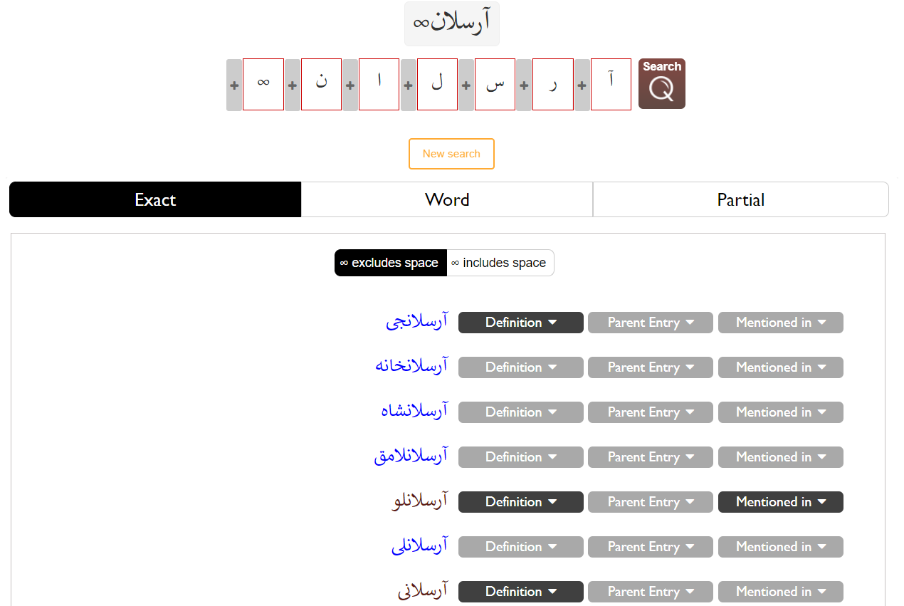
The ∞ function has been further divided into two tabs, as seen in the figures above and below. The tab selected by default indicates that none of the subsequent characters should include a space and lists all possible results accordingly (see figure above).
The second tab, when selected, allows users to search for entries that include spaces among the subsequent characters (see figure below).
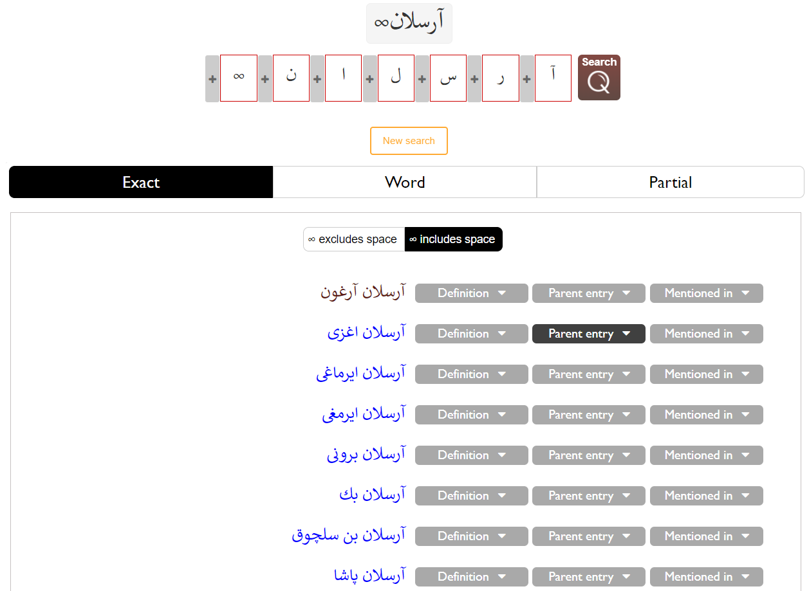
Word
Clicking on this tab displays entries composed of more than one word, one of which matches the search criteria entered.
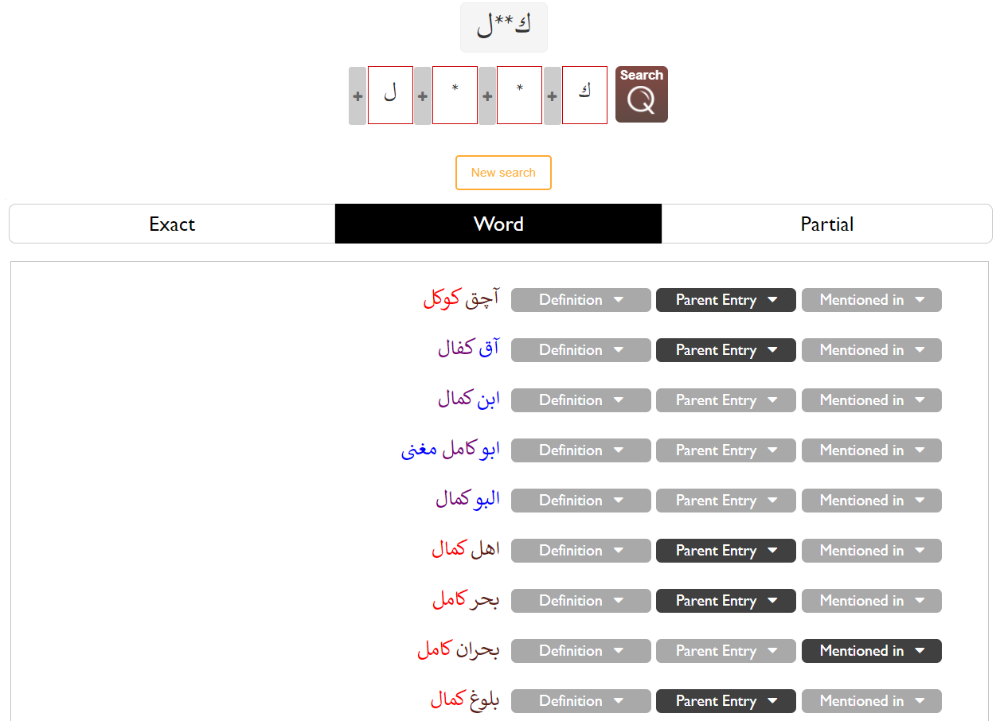
We have colored matching words so as to make them more easily noticed.
Partial
Clicking on the third tab allows users to view entries partially composed of the search criteria entered while restricting those entries that are exact, one-to-one matches or that constitute a complete word of a multi-worded phrase from being displayed. Here, we have sought to provide researchers with all possible results for words whose preceding or subsequent characters may be illegible or otherwise overlooked.
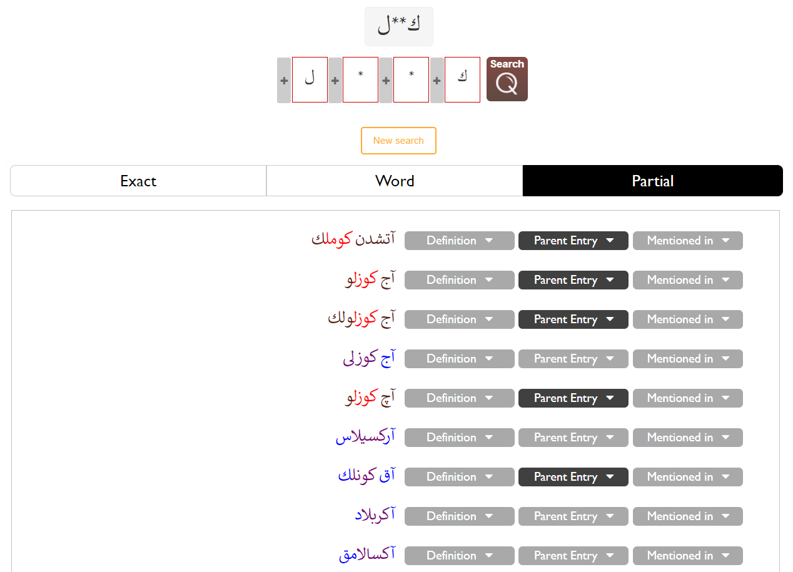
Buttons
Since we have included words’ definitions after integrating the Lexicon into our website, three buttons have been added subsequent to each result: Definition, Parent Entry, and Mentioned in.
The backgrounds of active buttons are black and those of inactive buttons are grey.
Definition
Clicking on this button shows users the word’s definition found in the Lexicon.
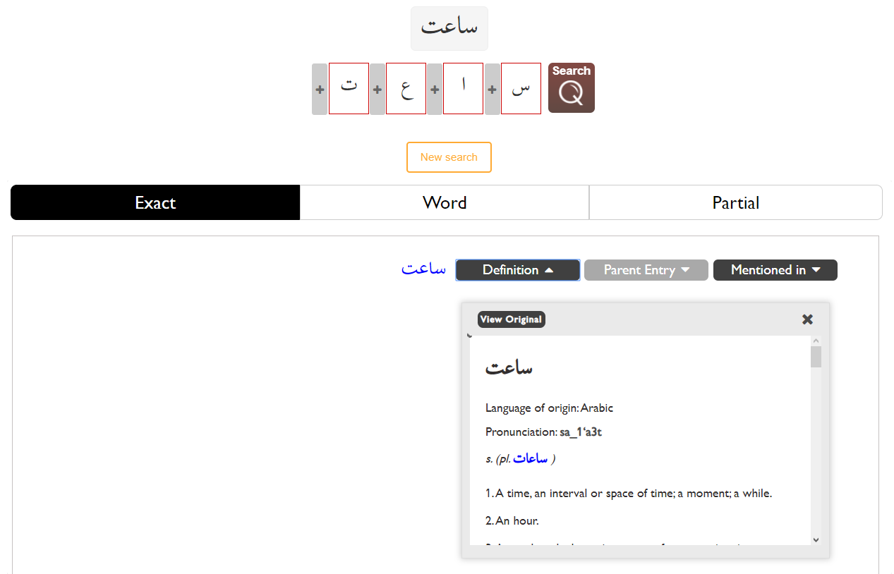
For readers who would rather see the English text in Turkish, we have put a button at the top of the definition box that translates it with Google Translate.
Links to words within the definition
If a word included in the definition exists as an exact, one-to-one entry in the dictionary, we have made it into a link that users may follow to view the related entry for the word.
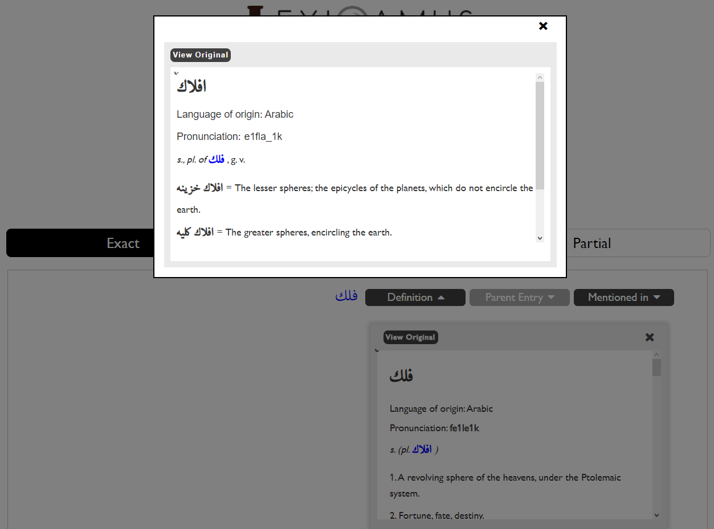
Parent Entry
If a search result is a sub-entry, we have included a button that allows users to view the main entry to which it belongs.
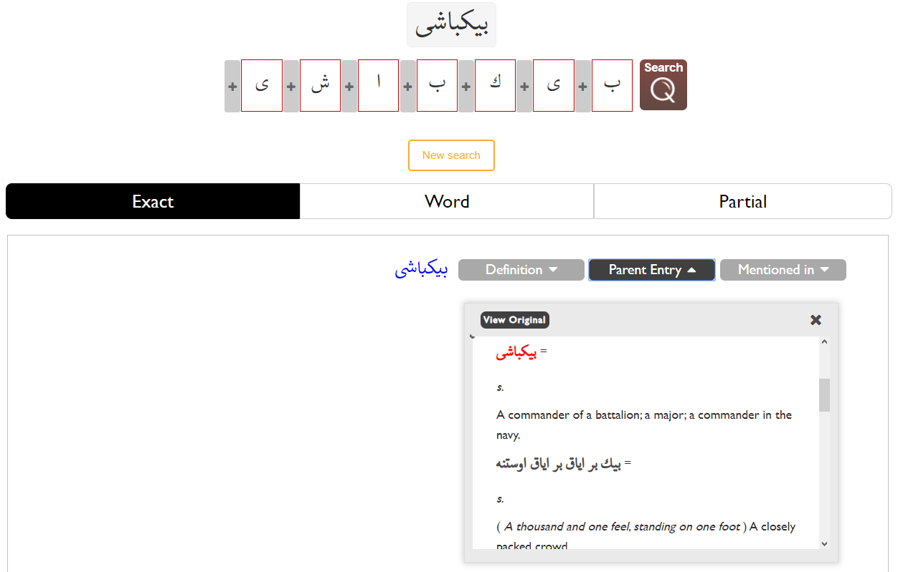
Mentioned in
This button allows users to view all the other places in the dictionary in which the result appears.
We have separated one-to-one and partial matches from each other.
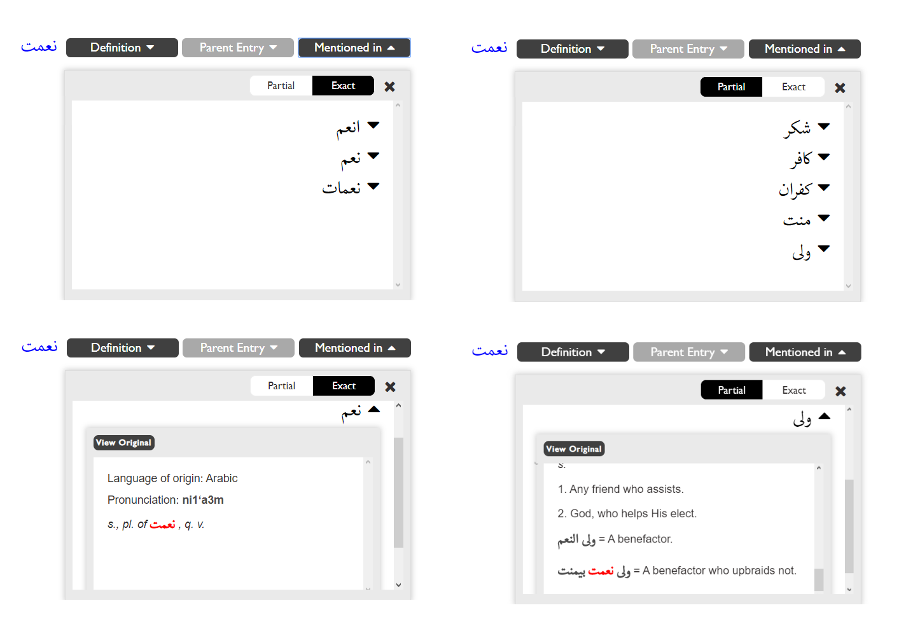
View Original
We have added the View Original button in the event that researchers might need to access the original text in which the entry appears.
Clicking on this button displays an image of the column in which the entry is found.
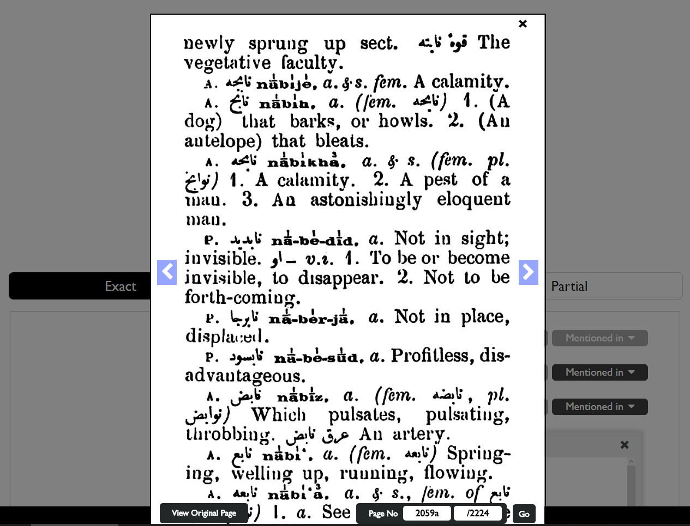
If the user wants to see the original page without any modification, we have included the button View Original Page that is linked to the original page.
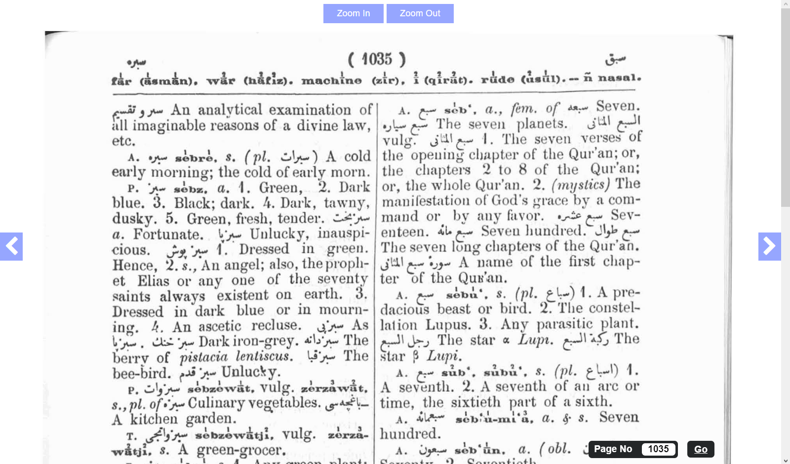
As the above examples illustrate, colors are used to aid users find the entry or sub-entry for which they are searching.
Clicking on the arrows on the sides of the column or page being viewed allows users to surf through the pages.
Using the form included at the bottom of columns allows users to jump directly to another column in the dictionary. The letter a stands for the column on the left of the pages, whereas the letter b represents the columns on the right.
Similarly, using the form at the bottom of the original pages allows users to jump directly to another page by entering the desired page number.
Keyboard Improvements
We have added five new characters to the keyboard, bringing the total number of letters on the keyboard to be 42.
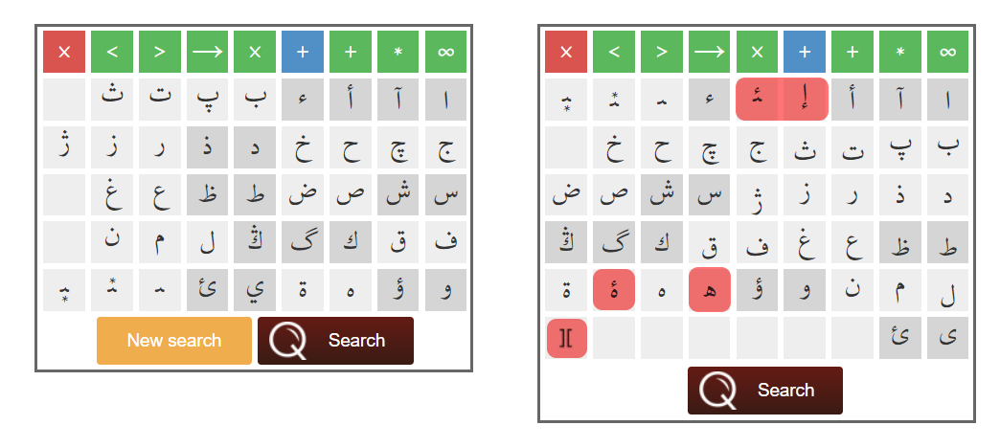
Below are the newly added letters and characters:
- إ : Since this letter is included in a multitude of words, we have added it to the keyboard in order to allow for more detailed search filters.
- ﺌ : This is actually the intermediate form of ئ. However, this letter, at times, is confused with ء, we have added this form of ئ to the keyboard as its own independent letter.
- ە : In the previous version there was only the connector ه. In order to perform more detailed searches, the Farsi ە, which does not join with subsequent letters, has been added to the keyboard.
- ۀ : Despite appearing in texts, no corresponding letter existed on the keyboard. It has since been added, allowing for more precise searches.
- ][ : This symbol represents a zero-width space. Though rare, this character is more common in compound words stemming from Western languages. Take, for example, the word فوتبول (i.e., football). Although the letter ت should normally be written conjoined to the following letter, it is written in its final form without a space demarking a new word. As such, we have added a zero-width space to the keyboard. Although this word could be found using a normal space, we would have compromised LexiQamus’ primary objective of narrowing results. By adding this character to the keyboard, we have ensured that the quality of the algorithm has been maintained and allowed for more thorough searches.
- ی : We have removed the dots for the independent form of this letter.
Published on February 5, 2020
Added while 2.0 was current
What we added to the tool and improved while 2.0 was in service, after the announcement above. The additions that came from our users’ suggestions are on the History of Suggestions and Corrections page.
Search and results
28 October 2021
Letters that look alike, letters that sound alike. You can now reach results containing letters that resemble one another in shape. Results that are phonetically close to your search can be shown from the matching tab.
28 October 2021
Search history. The My Search History button in your profile shows the searches you have made before.
8 January 2022
Search within the English definitions. Until now only Ottoman expressions could be searched in the Lexicon; the English definition is now searchable too. Type the word into the search bar, press Search, and every entry whose definition contains it is listed. The part holding the word is scrolled into view automatically, so you reach it at once.
15 April 2022
Rika and Divani tabs. Because the letters that resemble one another change from one hand to another, we added two tabs, Rika and Divani, under the similar-letter results. Results in different hands now appear in their own tabs.
3 May 2022
Similar letters by position in the word. The Similar Letters tab now searches by where the letter stands in the word. Searching لبیب, for instance, we also look for ی in place of the first ب but not the last, because the two resemble each other at the start of a word and not at the end.
26 May 2022
Show / Hide All Definitions. We added Show / Hide All Definitions at the top right of the results list, so every definition on the page opens at once and the meanings can be read through faster.
Entry and dictionary view
8 January 2022
Seeing the original of an Ottoman word. With this update you can hover over an entry, a sub-entry, or an Ottoman word or phrase that appears in a definition without one of its own, and see its original in the Lexicon. Clicking that image takes you to where the word sits in the dictionary column.
8 January 2022
A new tab under Mentioned in. An Entry tab was added to the box that shows the other entries whose definition contains the result. It lists the entries the result appears within in part.
8 January 2022
Special characters in the transliterations. We brought the transliterations closer to the original in shape as well. Numerals now sit above the letters, as they do in the source.
1 July 2022
Plainer definition boxes and navigation arrows. We redesigned the boxes that carry an entry’s definition from Redhouse’s Lexicon and made them plainer, and added arrows that move to the previous and the next entry.
Word Decoder and keyboard
28 October 2021
Typing into the boxes. You can now enter letters into the boxes with the keys of your own keyboard.
28 October 2021
Sharing a search. The Share Search button under the boxes copies a link to your search. Whoever opens it sees the characters you entered, in the same forms and the same order.
28 October 2021
The hints that appear over the buttons. Clearing the tick in the box marked Show button information hides the explanations that appear when the cursor is brought onto a key.
8 September 2022
Join chains. We added chains between the boxes that show whether the letters are joined. Clicking a chain marked with a question mark tells LexiQamus whether they are, and narrows your results further.